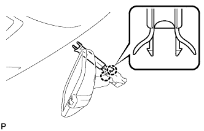
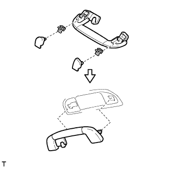

ОБИВКА КРЫШИ (для 3-х дверной модели) > УСТАНОВКА |
| 1. УСТАНОВИТЕ ПРАВУЮ БОКОВУЮ ОБЛИЦОВОЧНУЮ НАКЛАДКУ ПОЛКИ БАГАЖНОГО ОТДЕЛЕНИЯ (для моделей без запасного колеса) |
Введите в зацепление 7 захватов и 3 направляющих, чтобы установить боковую облицовочную накладку полки багажного отделения.
Поверните 2 ручки, чтобы ввести в зацепление замок.
| 2. УСТАНОВИТЕ КРЫШКУ ГНЕЗДА В ЗАДНЕЙ БОКОВОЙ ОБЛИЦОВОЧНОЙ ПАНЕЛИ (для моделей с запасным колесом) |
Введите в зацепление 7 захватов и 3 направляющих, чтобы установить крышку гнезда в задней боковой облицовочной панели.
| 3. УСТАНОВИТЕ БОКОВУЮ ОБЛИЦОВОЧНУЮ НАКЛАДКУ В ЗАДНЕЙ ЧАСТИ КУЗОВА |
Введите в зацепление 2 захвата, чтобы закрепить боковую облицовочную накладку.
| 4. УСТАНОВИТЕ КРЮК ПЛЕЧЕВОГО КРЕПЛЕНИЯ РЕМНЯ БЕЗОПАСНОСТИ ЛЕВОГО ЗАДНЕГО СИДЕНЬЯ |
Введите в зацепление захват и направляющую, чтобы закрепить держатель плечевого крепления ремня заднего сиденья.
| 5. УСТАНОВИТЕ КРЮК ПЛЕЧЕВОГО КРЕПЛЕНИЯ РЕМНЯ БЕЗОПАСНОСТИ ПРАВОГО ЗАДНЕГО СИДЕНЬЯ |
| 6. УСТАНОВИТЕ ДЕРЖАТЕЛЬ ЧАШКИ В ЛЕВОЙ БОКОВОЙ ОБЛИЦОВКЕ ПОЛКИ БАГАЖНОГО ОТДЕЛЕНИЯ |
Введите в зацепление 4 захвата, чтобы установить держатель чашки в боковой облицовке полки багажного отделения.
| 7. УСТАНОВИТЕ ДЕРЖАТЕЛЬ ЧАШКИ В ПРАВОЙ БОКОВОЙ ОБЛИЦОВКЕ ПОЛКИ БАГАЖНОГО ОТДЕЛЕНИЯ |
| 8. УСТАНОВИТЕ ЗАДНЯЮЮ РАСПОРНУЮ ДЕТАЛЬ ЛЕВОГО БОКОВОГО БРУСА № 2 |
Установите заднюю распорную деталь бокового бруса, закрепив ее 4 захватами.
Установите фиксатор.
| 9. УСТАНОВИТЕ ЗАДНЮЮ РАСПОРНУЮ ДЕТАЛЬ ПРАВОГО БОКОВОГО БРУСА № 2 |
| 10. УСТАНОВИТЕ ЗАДНЮЮ РАСПОРНУЮ ДЕТАЛЬ ЛЕВОГО БОКОВОГО БРУСА (для моделей без подушки безопасности занавесочного типа) |
Установите заднюю распорную деталь бокового бруса, закрепив ее 4 захватами.
| 11. УСТАНОВИТЕ ЗАДНЮЮ РАСПОРНУЮ ДЕТАЛЬ ПРАВОГО БОКОВОГО БРУСА (для моделей без подушки безопасности занавесочного типа) |
| 12. УСТАНОВИТЕ НАКЛАДКУ ПЛЕЧЕВОГО КРЕПЛЕНИЯ ЛЕВОГО ПЕРЕДНЕГО РЕМНЯ БЕЗОПАСНОСТИ В СБОРЕ |
Установите накладку плечевого крепления переднего ремня, закрепив ее 4 захватами.
| 13. УСТАНОВИТЕ НАКЛАДКУ ПЛЕЧЕВОГО КРЕПЛЕНИЯ ПРАВОГО ПЕРЕДНЕГО РЕМНЯ БЕЗОПАСНОСТИ В СБОРЕ |
| 14. УСТАНОВИТЕ ОБИВКУ КРЫШИ В СБОРЕ |
Внесите обивку крыши в автомобиль через дверь багажного отделения.
Для моделей без люка:
Введите в зацепление 2 фиксатора, чтобы установить обивку крыши.
 |
Для моделей с люком:
Введите в зацепление 2 фиксатора, 2 направляющих и 8 креплений, чтобы закрепить обивку крыши.
| *1 | Направляющая |
| *2 | Фиксатор |
Подсоедините разъем и присоедините 4 зажима к правой передней стойке.
Подсоедините разъем и присоедините 3 зажима к левой задней стойке.
Подсоедините 2 разъема и присоедините 3 зажима к правой передней стойке.
Заверните болт.
Подсоедините 2 разъема и присоедините 3 зажима к левой передней стойке.
для моделей с люком
Подсоедините разъем приводного механизма.
Для моделей с датчиком дождя:
Подсоедините разъем датчика дождя
Для моделей с зеркалом с электрохромным покрытием:
Подсоедините разъем внутреннего зеркала.
| 15. УСТАНОВИТЕ ОБЛИЦОВКУ ЛЕВОГО БОКОВОГО БРУСА КРЫШИ № 1 |
Установите 5 новых фиксаторов на облицовку бокового бруса крыши № 1.
| *1 | Новый зажим |
Введите в зацепление 5 фиксаторов, чтобы закрепить облицовку бокового бруса крыши № 1.
| 16. УСТАНОВИТЕ ОБЛИЦОВКУ ПРАВОГО БОКОВОГО БРУСА КРЫШИ № 1 |
| 17. УСТАНОВИТЕ ЛАМПУ ОСВЕЩЕНИЯ САЛОНА № 2 В СБОРЕ |
Установите лампу освещения салона № 2 (Нажмите здесь).
| 18. УСТАНОВИТЕ ЛАМПУ ОСВЕЩЕНИЯ САЛОНА № 1 В СБОРЕ |
Установите лампу освещения салона № 1 (Нажмите здесь).
| 19. УСТАНОВИТЕ КРЫШКУ ДЕРЖАТЕЛЯ СТОЙКИ ВНУТРЕННЕГО ЗЕРКАЛА ЗАДНЕГО ВИДА (для моделей с зеркалом с электрохромным покрытием) |
|  |
Введите в зацепление 2 захвата.
 |
Закрепив 2 захвата, как показано на рисунке, установите крышку держателя стойки внутреннего зеркала заднего вида.
| 20. УСТАНОВИТЕ КРЫШКУ ДАТЧИКА ДОЖДЯ (для моделей с датчиком дождя) |
Введите в зацепление 2 захвата, чтобы установить крышку датчика дождя.
| 21. УСТАНОВИТЕ ЛАМПУ ИНДИВИДУАЛЬНОГО ОСВЕЩЕНИЯ |
Подсоедините разъем.
Закрепив 4 фиксатора, установите лампу индивидуального освещения.
| 22. УСТАНОВИТЕ ДЕРЖАТЕЛЬ ПРОТИВОСОЛНЕЧНОГО КОЗЫРЬКА |
Введите в зацепление 2 захвата.
Вставьте держатель противосолнечного козырька, чтобы закрепить его.
| 23. УСТАНОВИТЕ ЛЕВЫЙ ПРОТИВОСОЛНЕЧНЫЙ КОЗЫРЕК В СБОРЕ |
Установите козырек и закрепите его 2 винтами.
| 24. УСТАНОВИТЕ ПРАВЫЙ ПРОТИВОСОЛНЕЧНЫЙ КОЗЫРЕК |
| 25. УСТАНОВИТЕ КРЫШКУ КРОНШТЕЙНА ЛЕВОГО ПРОТИВОСОЛНЕЧНОГО КОЗЫРЬКА |
Установите крышку кронштейна противосолнечного козырька и введите в зацепление 4 захвата.
| 26. УСТАНОВИТЕ КРЫШКУ КРОНШТЕЙНА ПРАВОГО ПРОТИВОСОЛНЕЧНОГО КОЗЫРЬКА |
| 27. УСТАНОВИТЕ ЗАДНИЙ ЛЕВЫЙ ВЕРХНИЙ ПОРУЧЕНЬ |
|  |
Смонтируйте верхний поручень, 2 фиксатора и 2 крышки, как показано на рисунке.
Установите верхний поручень.
| 28. УСТАНОВИТЕ ЗАДНИЙ ПРАВЫЙ ВЕРХНИЙ ПОРУЧЕНЬ |
| 29. УСТАНОВИТЕ ВЕРХНИЙ ПОРУЧЕНЬ В СБОРЕ |
 |
Смонтируйте верхний поручень, 2 фиксатора и 2 крышки, как показано на рисунке.
Установите верхний поручень.
| 30. УСТАНОВИТЕ ЛЕВУЮ ЗАДНЮЮ БОКОВУЮ ОБЛИЦОВОЧНУЮ ПАНЕЛЬ В СБОРЕ |
Введите в зацепление 4 захвата и 2 направляющих и пропустите напольное крепление ремня безопасности заднего сиденья № 1 через заднюю боковую облицовочную панель.
Введите в зацепление 7 фиксаторов, чтобы установить заднюю боковую облицовочную панель.
| 31. УСТАНОВИТЕ ПРАВУЮ ЗАДНЮЮ БОКОВУЮ ОБЛИЦОВОЧНУЮ ПАНЕЛЬ В СБОРЕ |
| 32. УСТАНОВИТЕ ЛЕВУЮ НАРУЖНУЮ ПЕРЕДНЮЮ ОБЛИЦОВОЧНУЮ ПАНЕЛЬ В СБОРЕ |
Пропустите напольное крепление ремня безопасности переднего сиденья через переднюю боковую облицовочную панель.
Введите в зацепление 2 фиксатора и 2 направляющих, чтобы закрепить переднюю наружную облицовочную панель.
Заверните болт.
| 33. УСТАНОВИТЕ ПРАВУЮ НАРУЖНУЮ ПЕРЕДНЮЮ ОБЛИЦОВОЧНУЮ ПАНЕЛЬ В СБОРЕ |
| 34. УСТАНОВИТЕ ЛЕВУЮ БОКОВУЮ ОБЛИЦОВОЧНУЮ ПАНЕЛЬ ПОЛКИ БАГАЖНОГО ОТДЕЛЕНИЯ В СБОРЕ |
Введите в зацепление 9 захватов и 11 фиксаторов, чтобы установить боковую облицовочную панель полки багажного отделения.
Вверните 3 болта и 2 винта.
Установите напольное крепление ремня безопасности заднего сиденья № 1 и закрепите его болтом.
Установите напольное крепление наружных ремней безопасности передних сидений и закрепите его болтом.
| 35. УСТАНОВИТЕ ПРАВУЮ БОКОВУЮ ОБЛИЦОВОЧНУЮ ПАНЕЛЬ ПОЛКИ БАГАЖНОГО ОТДЕЛЕНИЯ |
Подсоедините разъем.
Введите в зацепление 9 захватов и 11 фиксаторов, чтобы установить боковую облицовочную панель полки багажного отделения.
Вверните 3 болта и 2 винта.
Установите напольное крепление ремня безопасности заднего сиденья № 1 и закрепите его болтом.
Установите напольное крепление наружных ремней безопасности передних сидений и закрепите его болтом.
| 36. УСТАНОВИТЕ НАКЛАДКУ КРЕПЛЕНИЯ ПОЯСНОГО РЕМНЯ БЕЗОПАСНОСТИ |
Введите в зацепление 3 захвата, чтобы установить накладку крепления поясного ремня безопасности.
| 37. УСТАНОВИТЕ КАРМАН В ЗАДНЕЙ БОКОВОЙ ОБЛИЦОВКЕ |
Введите в зацепление 6 захватов и 2 направляющих, чтобы установить карман в задней боковой облицовочной панели.
| 38. УСТАНОВИТЕ ПЕРЕДНЮЮ БОКОВУЮ ОБЛИЦОВОЧНУЮ НАКЛАДКУ БАГАЖНОГО ОТДЕЛЕНИЯ (для моделей с задней крышкой) |
Введите в зацепление 2 захвата, чтобы закрепить переднюю боковую облицовочную накладку полки багажного отделения.
| 39. УСТАНОВИТЕ КОЛПАЧОК КРЕПЛЕНИЯ ЗАДНЕЙ КРЫШКИ № 1 (для моделей без задней крышки) |
Введите в зацепление 2 захвата, чтобы закрепить колпачок крепления задней крышки.
| 40. УСТАНОВИТЕ ЗАЩЕЛКУ ОБЛИЦОВКИ БАГАЖНОГО ОТДЕЛЕНИЯ № 1 |
Установите защелку облицовочной панели багажного отделения № 1 так, чтобы она была расположена горизонтально.
| 41. УСТАНОВИТЕ ЗАДНИЙ НАПОЛЬНЫЙ КОВРИК |
Установите задний напольный коврик.
| 42. УСТАНОВИТЕ КРЫШКУ ОТВЕРСТИЯ В ЛЕВОЙ ЗАДНЕЙ БОКОВОЙ ОБЛИЦОВОЧНОЙ НАКЛАДКЕ |
Введите в зацепление 2 захвата и 2 направляющих, чтобы установить крышку отверстия в задней боковой облицовочной панели.
| 43. УСТАНОВИТЕ КРЫШКУ ОТВЕРСТИЯ В ПРАВОЙ ЗАДНЕЙ БОКОВОЙ ОБЛИЦОВКЕ |
| 44. УСТАНОВИТЕ ЗАДНЮЮ ОПОРНУЮ ПЛАСТИНУ КОВРИКА ЗАДНЕГО ПОЛА |
Введите в зацепление 6 захватов, чтобы установить заднюю опорную пластину коврика заднего пола.
Заверните 5 винтов.
| 45. УСТАНОВИТЕ НАКЛАДКУ УСТАНОВОЧНОЙ ПЛАСТИНЫ КОВРИКА |
Введите в зацепление 2 захвата, чтобы установить накладку установочной пластины коврика.
| 46. УСТАНОВИТЕ ЗАДНЮЮ КРЫШКУ В СБОРЕ (для моделей с задней крышкой) |
Установите заднюю крышку.
| 47. УСТАНОВИТЕ ОБИВКУ ЛЕВОЙ СТОЙКИ ВЕТРОВОГО СТЕКЛА |
Введите в зацепление 3 направляющих, чтобы установить обивку стойки ветрового стекла.
| 48. УСТАНОВИТЕ ОБИВКУ ПРАВОЙ СТОЙКИ ВЕТРОВОГО СТЕКЛА |
| 49. УСТАНОВИТЕ ВЕРХНИЙ ПОРУЧЕНЬ № 1 |
Введите в зацепление 2 захвата, чтобы установить верхний поручень № 1.
Вверните 2 болта.
| 50. УСТАНОВИТЕ ЛЕВУЮ ПЕРЕДНЮЮ ЗАГЛУШКУ ВЕРХНЕГО ПОРУЧНЯ № 1 |
Введите в зацепление 2 захвата, чтобы установить переднюю заглушку верхнего поручня № 1.
| 51. УСТАНОВИТЕ ПРАВУЮ ПЕРЕДНЮЮ ЗАГЛУШКУ ВЕРХНЕГО ПОРУЧНЯ № 1 |
| 52. УСТАНОВИТЕ УПЛОТНИТЕЛЬ ОБШИВКИ ПРОЕМА ЛЕВОЙ ПЕРЕДНЕЙ ДВЕРИ |
 |
Совместите нанесенную краской отметку на уплотнителе обшивки проема передней двери с отмеченным положением на автомобиле и установите уплотнитель обшивки проема передней двери, как показано на рисунке.
| *1 | Метка, нанесенная краской |
| *2 | Положение метки |
| 53. УСТАНОВИТЕ УПЛОТНИТЕЛЬ ОБШИВКИ ПРОЕМА ПРАВОЙ ПЕРЕДНЕЙ ДВЕРИ |
| 54. УСТАНОВИТЕ БОКОВУЮ ОБЛИЦОВОЧНУЮ НАКЛАДКУ С ЛЕВОЙ СТОРОНЫ КОЖУХА |
Введите в зацепление фиксатор и захват, чтобы установить боковую облицовочную накладку кожуха.
Установите фиксатор.
| 55. УСТАНОВИТЕ БОКОВУЮ ОБЛИЦОВОЧНУЮ НАКЛАДКУ С ПРАВОЙ СТОРОНЫ КОЖУХА |
| 56. УСТАНОВИТЕ ОПОРНУЮ НАКЛАДКУ ЛЕВОЙ ДВЕРИ В СБОРЕ |
Введите в зацепление 4 фиксатора, 10 захватов и 2 направляющие, чтобы установить опорную накладку двери.
| 57. УСТАНОВИТЕ ОПОРНУЮ НАКЛАДКУ ПРАВОЙ ДВЕРИ В СБОРЕ |
| 58. УСТАНОВИТЕ ЗАДНЕЕ СИДЕНЬЕ № 1 В СБОРЕ (для моделей с задним сиденьем № 1) |
Для левой стороны:
Установите заднее сиденье № 1 в сборе (Нажмите здесь).
Для правой стороны:
Установите заднее сиденье № 1 в сборе (Нажмите здесь).
| 59. ПОДСОЕДИНИТЕ ПРОВОД К ОТРИЦАТЕЛЬНОМУ ВЫВОДУ АККУМУЛЯТОРНОЙ БАТАРЕИ |